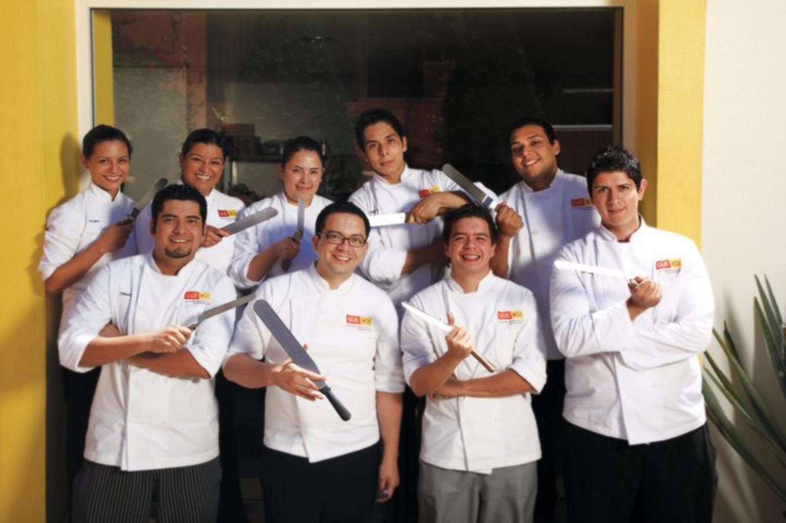

About Us
Histories of Our Restaurant
John Smith had always been passionate about food. Growing up, he loved spending time in the kitchen with his mother, experimenting with different ingredients and techniques. However, like many people, John felt like he needed to pursue a more traditional career path in order to be successful. So he went to college, got a degree in business, and landed a job at a big corporate firm.
For years, John worked in the corporate world, climbing the ladder and earning a good salary. But despite his success, he felt unfulfilled. He knew that his true passion was cooking, and he longed to open his own restaurant.
Finally, in 1998, John decided to take the leap. He quit his corporate job, enrolled in culinary school, and began planning for his restaurant. He spent months researching locations, testing recipes, and perfecting his business plan.
Finally, the day arrived. John opened the doors of his new restaurant, which he called "Restaurant XYZ." The name was simple, but John wanted the focus to be on the food, not the branding.
At first, things were slow. John's restaurant was located in a quiet part of town, and he struggled to attract customers. But he refused to give up. He poured all of his energy into making the best food he could, and slowly but surely, people began to take notice.
As word of mouth spread, John's restaurant began to fill up. People loved the fresh, inventive dishes he was creating, and they appreciated the personal touch that came with having the chef himself in the kitchen. John felt like he was living his dream.
Over time, Restaurant XYZ became a staple of the community. John continued to experiment with new flavors and techniques, and he built up a loyal following of customers who appreciated his passion for food. He knew that he had made the right choice in leaving his corporate job to pursue his true calling. Years later, John still runs Restaurant XYZ. The restaurant has expanded and evolved over time, but John's commitment to quality and passion for food remains unchanged. He is grateful every day for the opportunity to do what he loves, and he hopes to inspire others to follow their own dreams, no matter how unconventional they may seem.
Meet the Team
Meet our Chefs
-

Head Chef John Smith
John Smith opened his own restaurant “Restaurant XYZ” in 1998. His passion for cooking and dedication to quality eventually earned him a loyal following. Today, John continues to run Restaurant XYZ, grateful for the opportunity to pursue his dream and inspire others to follow their passions.
-

Chef James Lee
Originally from South Korea, Chef James grew up watching his mother cook traditional Korean dishes. He developed an interest in cooking at a young age and moved to the United States to study culinary arts. Chef James worked his way up the ranks in several high-end restaurants before opening his own restaurant, where he fuses traditional Korean flavors with modern cooking techniques. His signature dishes include kimchi fried rice and Korean-style fried chicken.
-

Chef Laura Johnson
Chef Laura was born and raised in New Orleans, where she developed a love for Creole and Cajun cuisine. She attended culinary school in Louisiana and worked in several New Orleans restaurants before moving to New York City to work under a Michelin-starred chef. Chef Laura eventually opened her own restaurant, where she showcases her Louisiana roots with dishes like gumbo and jambalaya. She is also known for her innovative takes on classic Southern desserts, like beignets with a matcha twist.
Awards
-

Best Fine Dining Restaurant
-
Best Family-Friendly Restaurant
-
Best Local Restaurant
-
Best Vegetarian/Vegan Restaurant
Charities & Donations
XYZ Restaurant is a community-minded establishment that is committed to giving back in a variety of ways.
XYZ's Charitable Initiative
- Donating a portion of profits: XYZ has pledged to donate 5% of its profits each quarter to a local charity of its choice. This helps to ensure that the restaurant is making a positive impact on the community while also supporting important causes.
- Food donations: In addition to financial contributions, XYZ also donates its excess food to a local food bank. This ensures that food doesn't go to waste while also helping to feed those in need.
- Hosting fundraisers: XYZ regularly hosts fundraisers and charity events at the restaurant. These events typically include a special menu or a percentage of proceeds donated to a specific charity.
- Volunteering: XYZ's staff members are encouraged to volunteer their time and resources to local organizations. The restaurant also participates in community events and initiatives that support causes like education, health, and the environment.
- Sustainability initiatives: XYZ is committed to reducing its environmental impact and promoting sustainability. The restaurant uses eco-friendly packaging and utensils, sources ingredients from local and sustainable farms, and reduces food waste by composting and recycling.
Reviews From Critics & Customers
"Restaurant XYZ is a must-visit destination for any food lover. The dishes are expertly crafted with the freshest ingredients, and the service is exceptional." -Winston Churchill, food critic
"One of the best dining experiences I've had in years. The attention to detail in every aspect of the restaurant, from the menu to the decor, is truly impressive."- James Smith, food critic
"I recently dined at restaurant XYZ and was blown away by the flavors and presentation of every dish. The staff was attentive and knowledgeable, making the entire experience a delight." -Robinson Crusoe, customer
"If you're looking for a restaurant that truly values quality and service, XYZ is the place to go. I can't recommend it enough!"- Jane Doe, customer
XYZ's Principles & Values
- Fresh ingredients
- XYZ is committed to using only the freshest ingredients in all of its dishes. This means sourcing ingredients from local farms whenever possible to ensure that everything is as fresh and flavorful as possible.
- Locally sourced
- In addition to using fresh ingredients, XYZ also values supporting local farmers and producers. The restaurant is committed to sourcing ingredients locally whenever possible to support the community and ensure the highest quality ingredients.
- Exceptional service
- At XYZ, exceptional service is a top priority. The restaurant is committed to providing every guest with an exceptional dining experience from start to finish, with attentive and friendly service, and a welcoming atmosphere.
XYZ's Objectives
Mission & Vision
- Mission: To provide an unforgettable dining experience for all of our guests.
- Vision: To become a destination for food lovers everywhere, known for our exceptional cuisine, warm hospitality, and stunning ambiance.
Objectives
- Expand the menu to include more vegetarian and vegan options to meet the growing demand for plant-based dishes.
- Increase community outreach efforts by partnering with local organizations and hosting charity events to give back to the community.
- Improve sustainability efforts by reducing waste and sourcing ingredients from local and sustainable sources.
- Continue to provide exceptional service by training and developing staff members to ensure that every guest has a memorable dining experience.
- Explore new culinary trends and techniques to keep the menu fresh and exciting for guests.
XYZ's Training Program
- Selection Process
- XYZ has a rigorous process for selecting staff members who are a good fit for the restaurant's culture and values.
- This includes an interview process that assesses their experience, personality, and customer service skills.
- Training
- Once selected, staff members go through an extensive training program that covers everything from menu knowledge and wine pairing to customer service and restaurant operations.
- The training is designed to ensure that every staff member is equipped with the knowledge and skills to provide exceptional service to guests.
- Ongoing Development
- XYZ is committed to ongoing development of its staff members, with regular training sessions and opportunities for growth and advancement within the restaurant.
- This ensures that staff members continue to provide the highest level of service to guests and are equipped to handle any situation that arises.